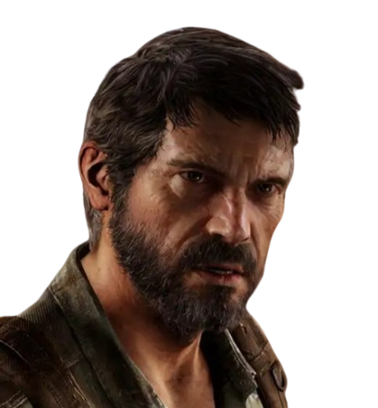

Somos Artyom y Miguel: un artesano y un creativo que se conocieron durante la pandemia y conectaron gracias a su amor por los videojuegos. Juntos decidimos unir nuestras habilidades para dar vida a Spartan Heaven, combinando creatividad, detalle y narrativa en cada objeto que producimos.
Spartan Heaven nació en abril de 2025, Miguel empezó un proyecto académico y se transformó en la idea de crear objetos artesanales que no solo sean productos, sino portadores de historias y emociones.
Spartan Heaven mezcla lo mejor de dos mundos: los Espartanos de Metro 2033, que representan resiliencia, disciplina y lucha por un mundo propio en entornos hostiles; y Outer Heaven de Metal Gear, que simboliza independencia, identidad única y fuerza de comunidad. Nuestra marca toma lo mejor de ambos universos para crear un mundo artesanal, exclusivo y narrativo.
No tememos a la competencia, tememos a no dar la mejor calidad. Cada pieza que producimos es única y cuidadosamente diseñada, con un pedazo de historia y emoción dentro. Queremos que nuestros clientes no solo compren un producto, sino que se sumerjan en un universo cuidadosamente construido que conecta con ellos.
Spartan Heaven tiene los siguientes valores:
Transmitir la autenticidad de los materiales y procesos mediante historias que revelan el origen y el valor de cada pieza.
capacidad de dar forma física a historias, de que cada objeto sea un fragmento del mundo que se pueda tocar, sostener y sentir
cada decisión de producción busca minimizar el impacto ambiental, aprovechar al máximo los materiales y darles nueva vida.
hacer sentir al cliente que no es solo un número, sino alguien con quien la marca se preocupa y conecta de verdad. No se trata solo de vender, sino de escuchar, entender sus deseos y emociones
tambien creemos que estas son las cosas que nos hacen únicos frente a la competencia:
La artesanía es el corazón de Spartan Heaven, cada pieza está creada a mano, con intención, tiempo y alma. No hay dos iguales, porque cada una lleva la huella de quien la hizo y la historia que representa. Es lo que convierte cada producto en una obra única, auténtica y viva.
La exclusividad en Spartan Heaven reside en que cada pieza es única e irrepetible. No se trata solo de tener algo que pocos poseen, sino de sentir que lo que tienes fue hecho solo para ti, con su propia historia y carácter. Esa rareza artesanal es lo que convierte cada objeto en una auténtica reliquia.
La comunidad en Spartan Heaven es el alma que da sentido a todo: un grupo de personas unidas por la pasión, la curiosidad y el amor por lo artesanal y lo narrativo. No son simples clientes, sino exploradores del mismo universo, que comparten experiencias, historias y descubrimientos. Juntos forman una familia que crece, aprende y mantiene viva la esencia de la marca.

Encargado de diseño y producción artesanal. Lidera el diseño y la creación de cada pieza, cuidando cada detalle para que cada objeto sea único, funcional y lleno de historia. Su habilidad y precisión es el cuerpo de Spartan Heaven.